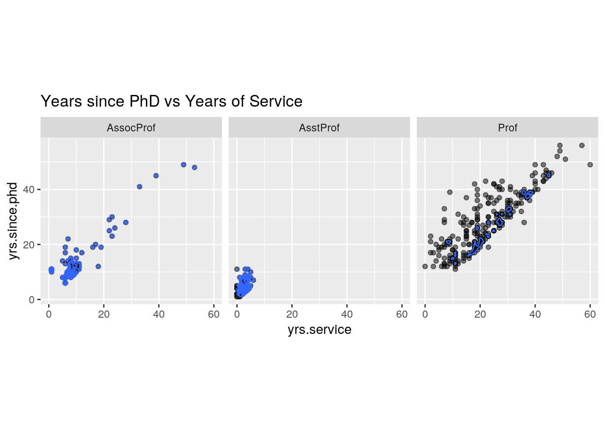
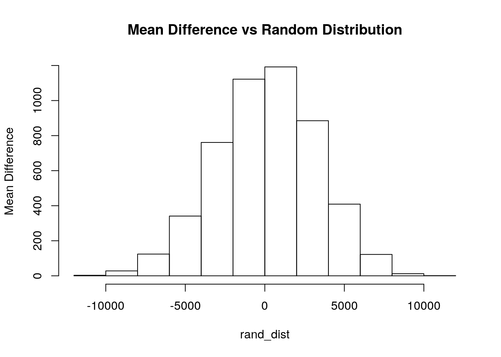
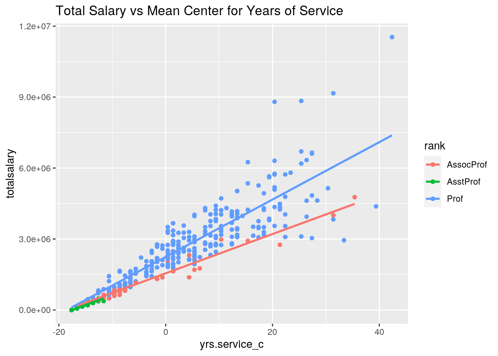
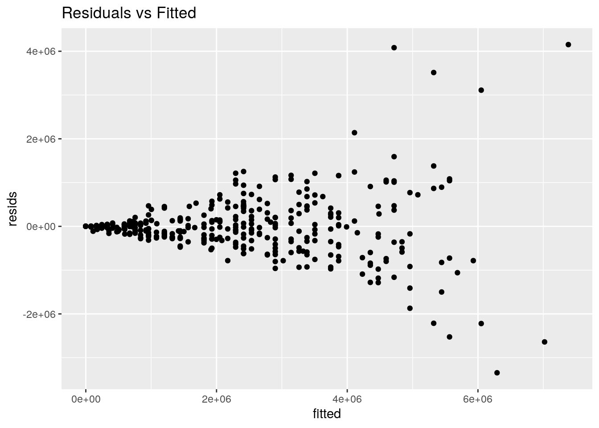
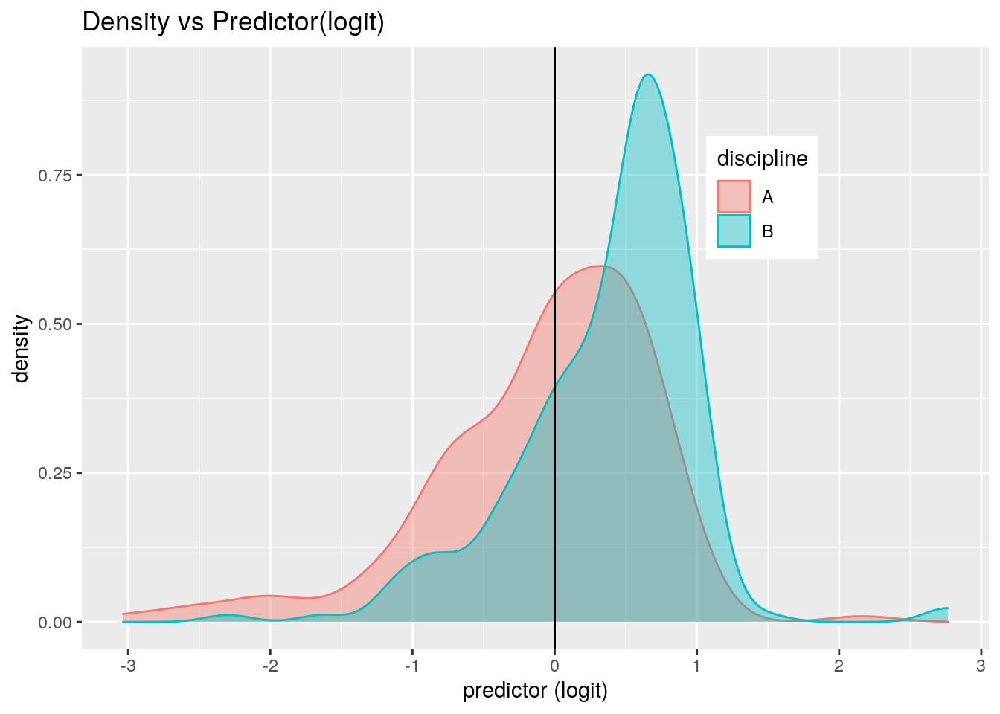
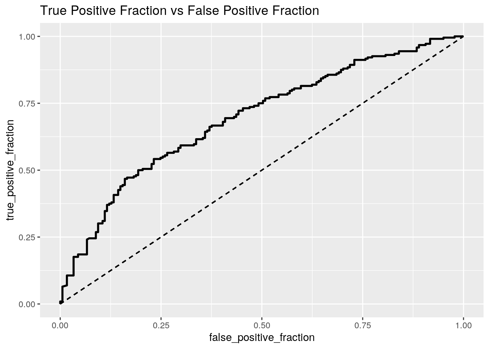

project2.0<-read.csv(file = '~/Projects (SDS348)/Salaries.csv')
head(project2.0)## X rank discipline yrs.since.phd yrs.service sex salary
## 1 1 Prof B 19 18 Male 139750
## 2 2 Prof B 20 16 Male 173200
## 3 3 AsstProf B 4 3 Male 79750
## 4 4 Prof B 45 39 Male 115000
## 5 5 Prof B 40 41 Male 141500
## 6 6 AssocProf B 6 6 Male 97000For my dataset, I had decided to look at that salaries of college professors and how it had differed upon their rank, discipline, years since they had gotten his/her PhD, years of service, and sex. For rank - it had looked at to see whether a person was considered to be a Professor, an Associate Professor, or an Assistant Professor. For discipline - it had looked at their behavior and rated the person on an A or B scale. For years since he/she had gotten their PhD - it had looked at how many years he/she have been teaching since receiving their PhD. For years of service - it had looked at the total amount of time a person had spent teaching at that school. And for sex - it had looked at whether the person was considered a male or a female. In total, there were 398 observations that were made.
man1<-manova(cbind(yrs.since.phd,yrs.service,salary)~rank, data=project2.0)
summary(man1)## Df Pillai approx F num Df den Df Pr(>F)
## rank 2 0.63281 60.633 6 786 < 2.2e-16 ***
## Residuals 394
## ---
## Signif. codes: 0 '***' 0.001 '**' 0.01 '*' 0.05 '.' 0.1 ' ' 1summary.aov(man1)## Response yrs.since.phd :
## Df Sum Sq Mean Sq F value Pr(>F)
## rank 2 32390 16194.8 191.18 < 2.2e-16 ***
## Residuals 394 33376 84.7
## ---
## Signif. codes: 0 '***' 0.001 '**' 0.01 '*' 0.05 '.' 0.1 ' ' 1
##
## Response yrs.service :
## Df Sum Sq Mean Sq F value Pr(>F)
## rank 2 24812 12406 115.9 < 2.2e-16 ***
## Residuals 394 42175 107
## ---
## Signif. codes: 0 '***' 0.001 '**' 0.01 '*' 0.05 '.' 0.1 ' ' 1
##
## Response salary :
## Df Sum Sq Mean Sq F value Pr(>F)
## rank 2 1.4323e+11 7.1616e+10 128.22 < 2.2e-16 ***
## Residuals 394 2.2007e+11 5.5855e+08
## ---
## Signif. codes: 0 '***' 0.001 '**' 0.01 '*' 0.05 '.' 0.1 ' ' 1pairwise.t.test(project2.0$yrs.since.phd, project2.0$rank, p.adj = "none")##
## Pairwise comparisons using t tests with pooled SD
##
## data: project2.0$yrs.since.phd and project2.0$rank
##
## AssocProf AsstProf
## AsstProf 3.6e-10 -
## Prof < 2e-16 < 2e-16
##
## P value adjustment method: nonepairwise.t.test(project2.0$yrs.service, project2.0$rank, p.adj = "none")##
## Pairwise comparisons using t tests with pooled SD
##
## data: project2.0$yrs.service and project2.0$rank
##
## AssocProf AsstProf
## AsstProf 2.0e-07 -
## Prof 3.2e-13 < 2e-16
##
## P value adjustment method: nonepairwise.t.test(project2.0$salary, project2.0$rank, p.adj = "none")##
## Pairwise comparisons using t tests with pooled SD
##
## data: project2.0$salary and project2.0$rank
##
## AssocProf AsstProf
## AsstProf 0.0016 -
## Prof <2e-16 <2e-16
##
## P value adjustment method: nonelibrary(tidyverse)## ── Attaching packages ─────────────────────────────────────── tidyverse 1.3.0 ──## ✓ ggplot2 3.3.3 ✓ purrr 0.3.4
## ✓ tibble 3.0.4 ✓ dplyr 1.0.2
## ✓ tidyr 1.1.2 ✓ stringr 1.4.0
## ✓ readr 1.4.0 ✓ forcats 0.5.0## ── Conflicts ────────────────────────────────────────── tidyverse_conflicts() ──
## x dplyr::filter() masks stats::filter()
## x dplyr::lag() masks stats::lag()ggplot(project2.0, aes(x = yrs.service, y = yrs.since.phd)) + ggtitle("Years since PhD vs Years of Service")+geom_point(alpha = .5) + geom_density_2d(h=2) + coord_fixed() + facet_wrap(~rank)
library(rstatix)##
## Attaching package: 'rstatix'## The following object is masked from 'package:stats':
##
## filtergroup<-project2.0$rank
DVs<-project2.0%>%select(yrs.since.phd,yrs.service,,salary)
sapply(split(DVs,group),mshapiro_test)## AssocProf AsstProf Prof
## statistic 0.8039066 0.9455921 0.9039795
## p.value 8.388805e-08 0.005467303 5.392295e-12lapply(split(DVs,group), cov)## $AssocProf
## yrs.since.phd yrs.service salary
## yrs.since.phd 93.17237 90.4184 -38438.19
## yrs.service 90.41840 102.0136 -40264.14
## salary -38438.18552 -40264.1379 191315920.57
##
## $AsstProf
## yrs.since.phd yrs.service salary
## yrs.since.phd 6.458616 1.748304 -3289.074
## yrs.service 1.748304 2.237449 1743.627
## salary -3289.074175 1743.626866 66816117.409
##
## $Prof
## yrs.since.phd yrs.service salary
## yrs.since.phd 102.18845 98.94995 -1.651423e+02
## yrs.service 98.94995 134.33952 -1.602912e+04
## salary -165.14235 -16029.11946 7.683249e+08By performing a MANOVA test on all of my numeric variables to determine if there were any mean differences across my rank variable - it was determined that there was at least one mean difference present across my rank variable. As a result, a univariate ANOVA test was used to determine what mean difference was present across my rank variable. In doing so, it was determined that - all 3 numeric variables were to be significant and showing a mean different across my rank variable, since each of there p-values were founded to be equal to less than 0.05 (p-value for ‘yrs.since.phd’= < 2.2e-16 ; p-value for ‘yrs.service’ = < 2.2e-16 ; p-value for ‘salary’ = < 2.2e-16). And so, because all 3 numeric variables had shown a mean difference across the rank variable - a post-hoc t-test needs to be done on all 3 of them. As a result, by performing a post-hoc t-test on all 3 numeric variables against rank, it was determined that there were 3 significant differences that were found against rank. In that: 1) there is a significant difference between a professor’s rank and the years since they had gotten their PhD; 2) there is a significant difference between a professor’s rank and their years of service; and 3) there is a significant difference between a professor’s rank and their salary. Additionally, since there was a total of 13 tests that had occurred (1 MANOVAs, 3 ANOVAs, and 9 t-tests),it can be determined that the probability that I had made a type-I error was founded to be at 0.48665791672. In addition to this, after adjusting for multiple comparisons - it was founded to be that the boneferroni adjusted significance level had needed to be at 0.00384615384 in order to keep the overall type-I error rate at 0.05. Furthermore, if I were to look at the MANOVA assumption of multivariate normality and the MANOVA assumption of homogeneity of covariances - I do not believe that all of the MANOVA assumptions would have been met for this particular project. It’s because although the multivariate normality assumption was met, the homogeneity of covariances was not.
rand_dist<-vector()
for(i in 1:5000){
new<-data.frame(salary=sample(project2.0$salary),status=project2.0$rank)
rand_dist[i]<-sd(new[new$status=="Prof",]$salary)-
sd(new[new$status=="AssocProf",]$salary)
}
mean(rand_dist>32895.67 | rand_dist < -32895.67)## [1] 0{hist(rand_dist,main="Mean Difference vs Random Distribution",ylab="Mean Difference"); abline(v = c(32895.67,-32895.67),col="red")}
The randomization test that I am performing for my data will be the mean difference test. For this particular test the DVs that I am using are ‘Professor’ and ‘Associate Professor’. The null hypothesis was founded the be that: For both DVs (Professor, Associate Professor), the salary is to be the equal to one another. In regards to the alternate hypothesis, it was founded to be that: For both DVs (Professor, Associate Professor), the salary is to be different from one another. And so, by performing the test and determining the p-value results from the permutation test, it was founded to be that the probability of observing a mean difference as extreme was founded to be equal to 0 - which means that the we reject the null hypothesis since the p-value was founded to be less than 0.5. As a result, it can be determined that - for both DVs (Professor, Associate Professor), the salary is to be different from each other.
project2.0<-project2.0%>%mutate(totalsalary=salary*yrs.service)
project2.0$yrs.since.phd_c<-project2.0$yrs.since.phd-mean(project2.0$yrs.since.phd)
project2.0$yrs.service_c<-project2.0$yrs.service-mean(project2.0$yrs.service)
project2.0$salary_c<-project2.0$salary-mean(project2.0$salary)
fit1<-lm(totalsalary~yrs.service_c,data=project2.0)
summary(fit1)##
## Call:
## lm(formula = totalsalary ~ yrs.service_c, data = project2.0)
##
## Residuals:
## Min 1Q Median 3Q Max
## -3298167 -228637 -64762 217213 4180829
##
## Coefficients:
## Estimate Std. Error t value Pr(>|t|)
## (Intercept) 2134432 36361 58.7 <2e-16 ***
## yrs.service_c 123154 2799 44.0 <2e-16 ***
## ---
## Signif. codes: 0 '***' 0.001 '**' 0.01 '*' 0.05 '.' 0.1 ' ' 1
##
## Residual standard error: 724500 on 395 degrees of freedom
## Multiple R-squared: 0.8305, Adjusted R-squared: 0.8301
## F-statistic: 1936 on 1 and 395 DF, p-value: < 2.2e-16fit1.0<-lm(totalsalary~yrs.since.phd_c,data=project2.0)
summary(fit1.0)##
## Call:
## lm(formula = totalsalary ~ yrs.since.phd_c, data = project2.0)
##
## Residuals:
## Min 1Q Median 3Q Max
## -2450136 -487221 -14174 361325 6364784
##
## Coefficients:
## Estimate Std. Error t value Pr(>|t|)
## (Intercept) 2134432 48709 43.82 <2e-16 ***
## yrs.since.phd_c 113770 3784 30.06 <2e-16 ***
## ---
## Signif. codes: 0 '***' 0.001 '**' 0.01 '*' 0.05 '.' 0.1 ' ' 1
##
## Residual standard error: 970500 on 395 degrees of freedom
## Multiple R-squared: 0.6959, Adjusted R-squared: 0.6951
## F-statistic: 903.8 on 1 and 395 DF, p-value: < 2.2e-16fit1.1<-lm(totalsalary~yrs.service_c*rank,data=project2.0)
summary(fit1.1)##
## Call:
## lm(formula = totalsalary ~ yrs.service_c * rank, data = project2.0)
##
## Residuals:
## Min 1Q Median 3Q Max
## -3344501 -243331 -11522 148531 4152098
##
## Coefficients:
## Estimate Std. Error t value Pr(>|t|)
## (Intercept) 1551923.7 98882.2 15.695 < 2e-16 ***
## yrs.service_c 82918.5 8591.2 9.652 < 2e-16 ***
## rankAsstProf -102140.9 873543.7 -0.117 0.907
## rankProf 694141.6 109185.5 6.357 5.72e-10 ***
## yrs.service_c:rankAsstProf -487.3 57324.4 -0.009 0.993
## yrs.service_c:rankProf 38279.3 9334.6 4.101 5.01e-05 ***
## ---
## Signif. codes: 0 '***' 0.001 '**' 0.01 '*' 0.05 '.' 0.1 ' ' 1
##
## Residual standard error: 688700 on 391 degrees of freedom
## Multiple R-squared: 0.8484, Adjusted R-squared: 0.8464
## F-statistic: 437.6 on 5 and 391 DF, p-value: < 2.2e-16fit1.2<-lm(totalsalary~yrs.since.phd_c*rank,data=project2.0)
summary(fit1.2)##
## Call:
## lm(formula = totalsalary ~ yrs.since.phd_c * rank, data = project2.0)
##
## Residuals:
## Min 1Q Median 3Q Max
## -2553198 -463690 -23471 338191 6265428
##
## Coefficients:
## Estimate Std. Error t value Pr(>|t|)
## (Intercept) 1621294 146565 11.062 < 2e-16 ***
## yrs.since.phd_c 78524 12440 6.312 7.48e-10 ***
## rankAsstProf -1082854 816261 -1.327 0.185415
## rankProf 563034 161550 3.485 0.000548 ***
## yrs.since.phd_c:rankAsstProf -58476 47811 -1.223 0.222041
## yrs.since.phd_c:rankProf 37099 13723 2.703 0.007161 **
## ---
## Signif. codes: 0 '***' 0.001 '**' 0.01 '*' 0.05 '.' 0.1 ' ' 1
##
## Residual standard error: 953100 on 391 degrees of freedom
## Multiple R-squared: 0.7096, Adjusted R-squared: 0.7059
## F-statistic: 191.1 on 5 and 391 DF, p-value: < 2.2e-16gglinereg<-project2.0%>%ggplot(aes(yrs.service_c,totalsalary))+ggtitle("Total Salary vs Mean Center for Years of Service")+geom_point(aes(color=rank))+geom_smooth(method = 'lm',se=F,aes(color=rank))
gglinereg## `geom_smooth()` using formula 'y ~ x'
#Linearity
resids<-fit1.1$residuals
fitvals<-fit1.1$fitted.values
fitted<-fit1.1$fitted.values
ggplot()+ggtitle("Residuals vs Fitted")+geom_point(aes(fitted,resids))
#Normality
ks.test(resids, "pnorm", mean=0, sd(resids)) ## Warning in ks.test(resids, "pnorm", mean = 0, sd(resids)): ties should not be
## present for the Kolmogorov-Smirnov test##
## One-sample Kolmogorov-Smirnov test
##
## data: resids
## D = 0.16862, p-value = 3.134e-10
## alternative hypothesis: two-sided#Homoskedasticity
library(sandwich); library(lmtest)## Loading required package: zoo##
## Attaching package: 'zoo'## The following objects are masked from 'package:base':
##
## as.Date, as.Date.numericbptest(fit1.1)##
## studentized Breusch-Pagan test
##
## data: fit1.1
## BP = 105.71, df = 5, p-value < 2.2e-16summary(fit1.1)$coef## Estimate Std. Error t value Pr(>|t|)
## (Intercept) 1551923.6569 98882.18 15.694674948 2.130807e-43
## yrs.service_c 82918.5119 8591.24 9.651518727 6.540459e-20
## rankAsstProf -102140.9325 873543.70 -0.116927102 9.069779e-01
## rankProf 694141.6309 109185.48 6.357453491 5.724480e-10
## yrs.service_c:rankAsstProf -487.3273 57324.42 -0.008501216 9.932214e-01
## yrs.service_c:rankProf 38279.2961 9334.57 4.100809624 5.010637e-05coeftest(fit1.1,vcov=vcovHC(fit1.1))##
## t test of coefficients:
##
## Estimate Std. Error t value Pr(>|t|)
## (Intercept) 1551923.66 46208.11 33.5855 < 2.2e-16 ***
## yrs.service_c 82918.51 4437.18 18.6872 < 2.2e-16 ***
## rankAsstProf -102140.93 77096.53 -1.3248 0.186
## rankProf 694141.63 55630.35 12.4778 < 2.2e-16 ***
## yrs.service_c:rankAsstProf -487.33 5877.61 -0.0829 0.934
## yrs.service_c:rankProf 38279.30 9227.54 4.1484 4.111e-05 ***
## ---
## Signif. codes: 0 '***' 0.001 '**' 0.01 '*' 0.05 '.' 0.1 ' ' 1By interpreting the coefficient estimates, it can be determined that - for every one increase in the year since the professor has served for the school, there is an increase in total salary by approximately 123,154 dollars on average. Additionally, it can also be determined that - for every one increase in the year since the professor has earned his/her PhD, there is an increase in total salary by approximately 113,770 dollars on average. However, if I were to also factor in the ranking of the professor, for every one increase in the year since the associate professor has served for the school - there is an increase in total salary for ‘Professors’ by approximately 38,279.30 dollars, while a decrease in total salary for ‘Assistant Professors’ by approximately 487.30 dollars. In addition to this, if I were to also factor in the ranking of the professor for years since the associate professor has earned his/her PhD - there is an increase in total salary for ‘Professors’ by approximately 37,099 dollars, while a decrease in total salary for ‘Assistant Professor’ by approximately 58,476 dollars. In addition to this, by looking at the linear regression model that I had created for this project, it shows that there is an increase in the total amount of salary for ‘Professors’ and ‘Associate Professors’ depending on how long they have served with the school on average. Additionally, if I were to check the assumptions of linearity, normality, and homoskedasticity - it can be seen in that neither linearity, normality, or homoskedasticity’s assumptions were met. As a result, since the p-value was founded to be equal to less than 0.5 for both normality and homoskedasticity - we reject the null hypothesis. In addition to this, if I were to recompute the regression results with robust standard errors - a significant change has occurred within the t-value and p-value sections. For the t-value section - there was a significant increase in t-value for ‘Professors’ and ‘yrs.service_c’, while a significant decrease in t-value for ‘Assistant Professor’. In regards to the p-value section - there was a significant increase in p-value for ‘Assistant Professor’ and ‘yrs.service_c:rankAsstProf’.
samp_distn<-replicate(5000, {
boot_dat <- sample_frac(project2.0, replace=T)
fit <- lm(totalsalary~yrs.service_c*rank, data=boot_dat)
coef(fit)
})
bootstrapproj2<-samp_distn %>% t %>% as.data.frame %>% summarize_all(sd)
bootstrapproj2## (Intercept) yrs.service_c rankAsstProf rankProf yrs.service_c:rankAsstProf
## 1 46018.36 4329.15 72723.3 55632.36 5580.697
## yrs.service_c:rankProf
## 1 8851.909By looking at the same regression model with bootstrapped standard errors present, it can be determined that - the values of these standard errors, are slightly lower in value in comparison to the original standard errors founded above. As a result of this, this also probably means that the p-values for this question - are more than likely to be lower in value in comparison to the one founded above since this question is accounting for standard errors, which will ultimately make our values smaller in comparison to the one that was founded in the previous question.
fit2<-glm(discipline~totalsalary+yrs.service+yrs.since.phd,data=project2.0,family="binomial")
coeftest(fit2)##
## z test of coefficients:
##
## Estimate Std. Error z value Pr(>|z|)
## (Intercept) 1.1436e+00 2.2679e-01 5.0426 4.593e-07 ***
## totalsalary 7.1581e-07 1.8291e-07 3.9134 9.100e-05 ***
## yrs.service -5.3979e-02 2.9092e-02 -1.8555 0.0635269 .
## yrs.since.phd -6.9327e-02 1.9993e-02 -3.4675 0.0005253 ***
## ---
## Signif. codes: 0 '***' 0.001 '**' 0.01 '*' 0.05 '.' 0.1 ' ' 1exp(coeftest(fit2))##
## z test of coefficients:
##
## Estimate Std. Error z value Pr(>|z|)
## (Intercept) 3.13802 1.25456 154.8661 1.000
## totalsalary 1.00000 1.00000 50.0696 1.000
## yrs.service 0.94745 1.02952 0.1564 1.066
## yrs.since.phd 0.93302 1.02019 0.0312 1.001prob<-predict(fit2,type="response")
pred<-ifelse(prob>.5,1,0)
table(prediction=pred, truth=project2.0$discipline) %>% addmargins## truth
## prediction A B Sum
## 0 83 49 132
## 1 98 167 265
## Sum 181 216 397accuracy<-(83+167)/397
sensitivity<-167/216
specificty<-83/181
precision<- 167/216
project2.0$logit<-predict(fit2,type="link")
project2.0%>%ggplot(aes(logit,color=discipline,fill=discipline))+geom_density(alpha=.4)+
theme(legend.position=c(.75,.75))+geom_vline(xintercept=0)+xlab("predictor (logit)")+ggtitle("Density vs Predictor(logit)")
library(plotROC)
ROCplot<-ggplot(project2.0)+geom_roc(aes(d=discipline,m=prob),n.cuts=0)+geom_segment(aes(x=0,xend=1,y=0,yend=1),lty=2)+ggtitle("True Positive Fraction vs False Positive Fraction")
ROCplot## Warning in verify_d(data$d): D not labeled 0/1, assuming A = 0 and B = 1!
calc_auc(ROCplot)## Warning in verify_d(data$d): D not labeled 0/1, assuming A = 0 and B = 1!## PANEL group AUC
## 1 1 -1 0.6944828For every 1 unit increase in total salary, odds of the discipline score being an A increases by 1.00000. In addition to this, for every 1 unit increase in years of service, odds of the discipline score being an A increases by 0.9475. And lastly, for every 1 unit increase in years since he/she has received their PhD, odds of the discipline score being an A increases by 0.93302. Additionally, I had also computed a confusion matrix for my logistic regression model, which aided in the computation of - the accuracy (0.6297229), sensitivity (TPR) [0.7731481], specificity (TNR) [0.6944444], precision (PPV) [0.7731481], and AUC (0.6944828). As a result, by looking at the value that was founded for AUC, it can be determined in that it is a poor predictor in trying to predict discipline ranking from just total salary, years of service, and years since receiving a PhD.
class_diag <- function(probs,truth){
if(is.character(truth)==TRUE) truth<-as.factor(truth)
if(is.numeric(truth)==FALSE & is.logical(truth)==FALSE) truth<-as.numeric(truth)-1
tab<-table(factor(probs>.5,levels=c("FALSE","TRUE")),factor(truth, levels=c(0,1)))
acc=sum(diag(tab))/sum(tab)
sens=tab[2,2]/colSums(tab)[2]
spec=tab[1,1]/colSums(tab)[1]
ppv=tab[2,2]/rowSums(tab)[2]
ord<-order(probs, decreasing=TRUE)
probs <- probs[ord]; truth <- truth[ord]
TPR=cumsum(truth)/max(1,sum(truth))
FPR=cumsum(!truth)/max(1,sum(!truth))
dup <-c(probs[-1]>=probs[-length(probs)], FALSE)
TPR <-c(0,TPR[!dup],1); FPR<-c(0,FPR[!dup],1)
n <- length(TPR)
auc <- sum( ((TPR[-1]+TPR[-n])/2) * (FPR[-1]-FPR[-n]))
data.frame(acc,sens,spec,ppv,auc)
}
fit3<-glm(discipline~totalsalary+yrs.since.phd+yrs.service+salary+yrs.since.phd_c+yrs.service_c+logit+salary_c,data=project2.0,family="binomial")
coeftest(fit3)##
## z test of coefficients:
##
## Estimate Std. Error z value Pr(>|z|)
## (Intercept) -1.6756e+00 7.1419e-01 -2.3461 0.01897 *
## totalsalary -2.9539e-07 2.8639e-07 -1.0314 0.30235
## yrs.since.phd -1.1605e-01 2.3919e-02 -4.8519 1.223e-06 ***
## yrs.service 8.7806e-02 4.3910e-02 1.9997 0.04554 *
## salary 3.1112e-05 7.6179e-06 4.0841 4.425e-05 ***
## yrs.since.phd_c NA NA NA NA
## yrs.service_c NA NA NA NA
## logit NA NA NA NA
## salary_c NA NA NA NA
## ---
## Signif. codes: 0 '***' 0.001 '**' 0.01 '*' 0.05 '.' 0.1 ' ' 1probs<-predict(fit3,type="response")
class_diag(probs,project2.0$discipline)## acc sens spec ppv auc
## 1 0.6523929 0.7546296 0.5303867 0.6572581 0.7302793set.seed(1234)
k=10
data <- project2.0 %>% sample_frac
folds <- ntile(1:nrow(data),n=10)
diags<-NULL
for(i in 1:k){
train <- data[folds!=i,]
test <- data[folds==i,]
truth <- test$discipline
fit <- glm(discipline~totalsalary+yrs.since.phd+yrs.service+salary+yrs.since.phd_c+yrs.service_c+logit+salary_c, data=train, family="binomial")
probs <- predict(fit, newdata=test, type="response")
diags<-rbind(diags,class_diag(probs,truth))}## Warning in predict.lm(object, newdata, se.fit, scale = 1, type = if (type == :
## prediction from a rank-deficient fit may be misleading
## Warning in predict.lm(object, newdata, se.fit, scale = 1, type = if (type == :
## prediction from a rank-deficient fit may be misleading
## Warning in predict.lm(object, newdata, se.fit, scale = 1, type = if (type == :
## prediction from a rank-deficient fit may be misleading
## Warning in predict.lm(object, newdata, se.fit, scale = 1, type = if (type == :
## prediction from a rank-deficient fit may be misleading
## Warning in predict.lm(object, newdata, se.fit, scale = 1, type = if (type == :
## prediction from a rank-deficient fit may be misleading
## Warning in predict.lm(object, newdata, se.fit, scale = 1, type = if (type == :
## prediction from a rank-deficient fit may be misleading
## Warning in predict.lm(object, newdata, se.fit, scale = 1, type = if (type == :
## prediction from a rank-deficient fit may be misleading
## Warning in predict.lm(object, newdata, se.fit, scale = 1, type = if (type == :
## prediction from a rank-deficient fit may be misleading
## Warning in predict.lm(object, newdata, se.fit, scale = 1, type = if (type == :
## prediction from a rank-deficient fit may be misleading
## Warning in predict.lm(object, newdata, se.fit, scale = 1, type = if (type == :
## prediction from a rank-deficient fit may be misleadingsummarize_all(diags,mean)## acc sens spec ppv auc
## 1 0.6525641 0.7505249 0.5329252 0.6620663 0.7073119library(glmnet)## Loading required package: Matrix##
## Attaching package: 'Matrix'## The following objects are masked from 'package:tidyr':
##
## expand, pack, unpack## Loaded glmnet 4.0-2y<-as.matrix(project2.0$discipline)
x<-model.matrix(discipline~totalsalary+yrs.since.phd+yrs.service+salary+yrs.since.phd_c+yrs.service_c+logit+salary_c,data=project2.0)[,-1]
x<-scale(x)
cv<-cv.glmnet(x,y,family="binomial")
lasso<-glmnet(x,y,family="binomial",lambda=cv$lambda.1se)
coef(lasso)## 9 x 1 sparse Matrix of class "dgCMatrix"
## s0
## (Intercept) 0.17599055
## totalsalary .
## yrs.since.phd -0.05939577
## yrs.service .
## salary 0.18828057
## yrs.since.phd_c -0.07918106
## yrs.service_c .
## logit 0.42780173
## salary_c .set.seed(1234)
k=10
data <- project2.0 %>% sample_frac
folds <- ntile(1:nrow(data),n=10)
diags<-NULL
for(i in 1:k){
train <- data[folds!=i,]
test <- data[folds==i,]
truth <- test$discipline
fit <- glm(discipline~totalsalary+yrs.since.phd+yrs.service+salary+yrs.since.phd_c+yrs.service_c+logit+salary_c,
data=train, family="binomial")
probs <- predict(fit, newdata=test, type="response")
diags<-rbind(diags,class_diag(probs,truth))
}## Warning in predict.lm(object, newdata, se.fit, scale = 1, type = if (type == :
## prediction from a rank-deficient fit may be misleading
## Warning in predict.lm(object, newdata, se.fit, scale = 1, type = if (type == :
## prediction from a rank-deficient fit may be misleading
## Warning in predict.lm(object, newdata, se.fit, scale = 1, type = if (type == :
## prediction from a rank-deficient fit may be misleading
## Warning in predict.lm(object, newdata, se.fit, scale = 1, type = if (type == :
## prediction from a rank-deficient fit may be misleading
## Warning in predict.lm(object, newdata, se.fit, scale = 1, type = if (type == :
## prediction from a rank-deficient fit may be misleading
## Warning in predict.lm(object, newdata, se.fit, scale = 1, type = if (type == :
## prediction from a rank-deficient fit may be misleading
## Warning in predict.lm(object, newdata, se.fit, scale = 1, type = if (type == :
## prediction from a rank-deficient fit may be misleading
## Warning in predict.lm(object, newdata, se.fit, scale = 1, type = if (type == :
## prediction from a rank-deficient fit may be misleading
## Warning in predict.lm(object, newdata, se.fit, scale = 1, type = if (type == :
## prediction from a rank-deficient fit may be misleading
## Warning in predict.lm(object, newdata, se.fit, scale = 1, type = if (type == :
## prediction from a rank-deficient fit may be misleadingdiags%>%summarize_all(mean)## acc sens spec ppv auc
## 1 0.6525641 0.7505249 0.5329252 0.6620663 0.7073119Based upon the in-sample classification diagnostics, I was able to determine the - accuracy value (0.6523929), sensitivity value (0.7546296), specificity value (0.5303867), precision value (0.6572581), and AUC value (0.7302793). As a result, by looking at the value that was founded for AUC, it can be determined in that it is a fair predictor in trying to predict discipline ranking from just total salary, years of service, years since receiving a PhD, salary, ‘yrs.service_c’, ‘yrs.since.phd_c’, ‘salary_c’, and ‘logit’. By performing a 10-fold CV with the same model, I was also able to determine the accuracy value (0.6525641), sensitivity value (0.7505249), specificity value (0.5329252), precision value (0.6620663), and AUC value (0.7073119). As a result, by looking at the value that was founded for AUC, it can also be determined in that it is a fair predictor in trying to predict discipline ranking from just total salary, years of service, years since receiving a PhD, salary, ‘yrs.service_c’, ‘yrs.since.phd_c’, ‘salary_c’, and ‘logit’. Additionally, by looking at the 10-fold CV model and comparing it to the in-sample model, it can be observed in that they are relatively similar to one another in value for Accuracy, Sensitivity, Specificity, Precision, and AUC. Moving on, if I were to perform a LASSO test on the same model, it can be discovered in that the values that were retained are - discipline, yrs.since.phd, salary, yrs.since.phd_c, and logit. As a result, the values that were not retained due to the LASSO test were - totalsalary, yrs.service, yrs.service_c, and salary_c. However, in addition to the LASSO model, if I were to perform a 10-fold CV test for it - I was able to determine the accuracy value (0.6525641), sensitivity value (0.750249), specificity value (0.5329252), precision value (0.6620663), and AUC value (0.7073119). As a result, by looking at the value that was founded for AUC, it can also be determined in that it is a fair predictor in trying to predict discipline ranking from just total salary, years of service, years since receiving a PhD, salary, ‘yrs.service_c’, ‘yrs.since.phd_c’, ‘salary_c’, and ‘logit’. In addition to this, by comparing the results from the LASSO test to the in-sample test and the 10-fold CV test, it can be determined in that the values are relatively similar to one another.